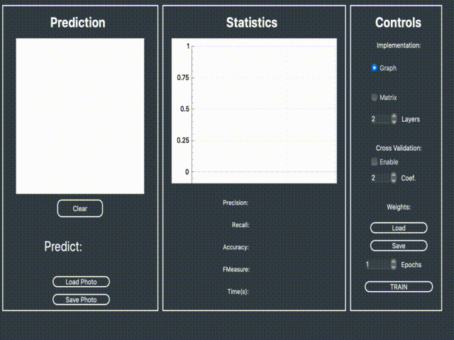
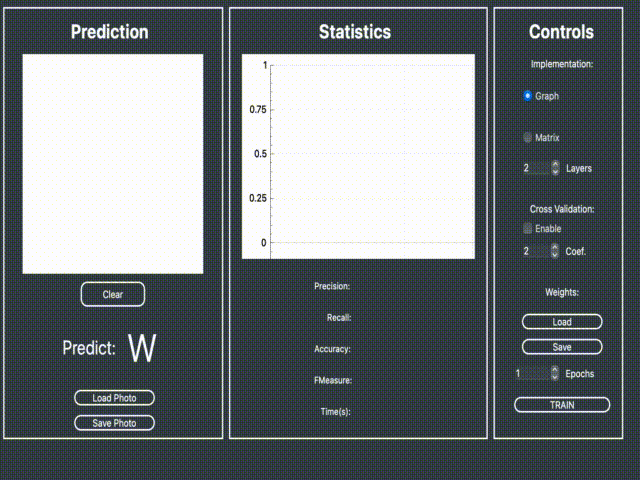

developed on C++17 language with QT Creator
This program is made for MacOS. You can install it to your Mac by implementing "make" command in the command line.
The program is a multilayer perceptron (neural network), it can understand which letter of latin alphabet is drawn.
You can draw letters by yourself on the left side of the program interface or upload some picture with "Load Photo" button.
Remember that before drawing/uploading a picture you have to upload some weights or train the network on some dataset.
You can choose graph/matrix implementation of the perceptron, number of layers and epochs of studying. Also you can choose "Cross Validation" mode for training.
After a while you will see some statistics about learning process: